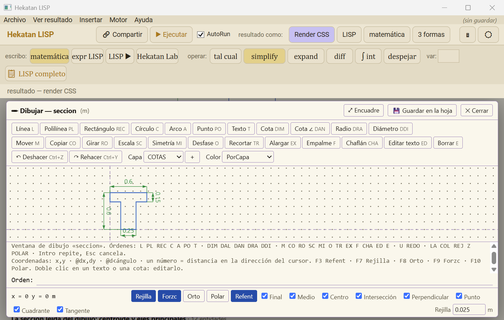

Hekatan LISP
Manual de uso · versión 1.29 · escritorio (Windows) y web
Hekatan LISP es una hoja de cálculo matemática: escribes datos, fórmulas y texto a la izquierda y a la derecha sale la matemática dibujada, con los resultados. Por dentro, cada fórmula se convierte en una lista de LISP y un motor simbólico la simplifica, deriva, integra y opera con matrices. La misma idea sirve para dibujar: en LISP un dibujo también es una lista (la de AutoCAD), así que se puede calcular un dibujo y medir lo dibujado.
1 · Instalar
Descarga el instalador y ejecútalo. No pide nada más: el motor (SBCL) va dentro.
github.com/GiorgioBurbanelli89/hekatan-lisp/releases
→ HekatanLisp_Setup_v1.29.x.exe. Queda en %LOCALAPPDATA%\Programs\Hekatan LISP.
Sin instalar nada, la versión web: giorgioburbanelli89.github.io/hekatan-lisp.
2 · La ventana

| Parte | Para qué |
|---|---|
| 🔗 Compartir | Crea un enlace de la web con tu hoja dentro (ver §10). |
| ▶ Ejecutar · AutoRun | Calcula. Con AutoRun encendido calcula solo, mientras escribes. F5 = Ejecutar. |
| resultado como | Render CSS (matemática dibujada) · LISP · matemática · 3 formas (las tres juntas, para aprender). |
| escribo | Cómo escribes a la izquierda: matemática (lo normal), expr LISP, LISP ▶ (programa), Hekatan Lab (MATLAB). |
| operar | Aplica a toda la hoja: simplify, expand, diff, ∫ int, despejar. En var va la variable. |
| Archivo | Abrir, Guardar (Ctrl+S), Exportar a PDF, Guardar dibujo como…, Compartir enlace web. |
| Calculadora (🖩) | Botones de letras griegas, funciones y LISP. Se oculta con «minimizar». |
Ctrl + rueda del ratón = zoom, en el editor y en el resultado.
3 · Mi primera hoja
La regla madre: una línea que empieza con # es texto; sin nada es matemática;
con ; es LISP. Lo que va después de un apóstrofo ' es el comentario de esa línea (las unidades, qué es).
# Mi primera hoja
#: Escribo datos y fórmulas a la izquierda; a la derecha sale la matemática dibujada.
L = 6 'largo de la viga, m
q = 10 'carga repartida, kN/m
M = q*L^2/8 'momento máximo, kN·m
## Operaciones simbólicas
f(x) = x^3 - 2*x
Derivate{f(x) @ x}
Integral{f(x) @ x}
Area{x^2 @ x = 0 : 3}
## Matrices
A = [2 1; 1 3]
A^-1

Texto
| Escribes | Sale |
|---|---|
# Título · ## Subtítulo · ### … | encabezados |
#: texto | párrafo |
#| · #> · #< | centrado · derecha · izquierda |
**negrita** · *cursiva* | negrita · cursiva |
@var · @{expr} | pone «var = valor» o solo el valor dentro del texto |
x_0 · theta · N_1(x) | subíndice x₀ · letra griega θ · N₁(x) |
4 · Operaciones simbólicas
Se escriben Nombre{ f @ variable = a : b }; los campos que sobran se omiten.
| Operación | Qué hace |
|---|---|
Simplify{f} · Expand{f} · Factor{f} | junta términos · distribuye · factoriza |
Derivate{f @ x} · Partial{f @ x} | derivada total · parcial ∂f/∂x |
Integral{f @ x} · Area{f @ x = a : b} | integral indefinida · definida |
Slope{f @ x = a} | pendiente: la derivada evaluada en a |
Sum{f @ i = a : b} · Product{…} | Σ · Π |
Root{f @ x} · Find{f @ x = a : b} | despeja f = 0 · busca la raíz en [a, b] |
f(x) = … y luego f(3) o f(a) | define y aplica la función (numérico o simbólico) |
A = [1 2; 3 4] · A' · A^-1 · A*B | matrices como en MATLAB; la inversa sale en fracciones exactas |
5 · Hoja numérica (como Calcpad)
Con una línea #numerico la hoja es un programa con estado: bucles, matrices grandes,
ensamblaje y solución. Cada línea sale como nombre = fórmula = valor.
#numerico n = 4 K = zeros(n, n) for i = 1:n K(i, i) = 2 end u = lsolve(K, ones(n, 1))
| Escribes | Hace |
|---|---|
for · while · if … elseif … else · end | bloques (también #for … #loop, #if … #end if de Calcpad) |
A(i, j) = x · M(:, j) · a:b:c | índices y rangos |
lsolve(A, b) · clsolve · inv · det | sistemas de ecuaciones |
integral(f, a, b) · integral2(…) · spline(…) | integrales numéricas e interpolación |
#hide / #show · #noc / #equ / #val | qué se muestra de cada línea |
#map(f(x, y), [xa xb], [ya yb]) · #surf(…) · #malla(…) | mapa de color · superficie 3D que se gira · malla del modelo |

6 · Dibujo con medidas calculadas
Un bloque #dibujo(…) … #fin dibuja con las variables de la hoja. Si cambias un dato, cambian el cálculo y el dibujo.
B = 8 'ancho de la placa
H = 5 'alto
r = sqrt(3/pi) 'radio del agujero de área 3
#dibujo("Placa con agujero", ud = m, cotas = m, ancho = 150, alto = 110)
# linea(0, 0, B, 0, "gruesa")
# circulo(B/2, H/2, r, "azul denso")
# arco(B - 1.5, H - 1.5, 1.5, 0, 90, "gruesa")
# cota(0, 0, B, 0, -0.8, "B = 8.00")
#fin
Piezas: linea, arco (grados), circulo, poligono, curva(a, b, f(x)), texto, cota, carga.
Estilos: gruesa, fina, eje, colores (rojo, azul…), relleno, tenue.

7 · Dibujo AutoLISP (2D y 3D)
En LISP el código es la lista de datos. Una línea del dibujo es la lista de AutoCAD
((0 . "LINE") (10 0 0) (11 3 4)): se arma con el cálculo, se pone con entmake y se lee de vuelta con
ssget / entget para seguir calculando. Es AutoLISP real: el mismo bloque corre en AutoCAD.
#autolisp("Título", ancho = 160, alto = 110, exporta = n)
(entmake (list '(0 . "LINE") '(10 0 0) (cons 11 (polar '(0 0) (/ pi 6) 5))))
(setq n (sslength (ssget "_X" '((0 . "LINE")))))
#fin
- Lo definido arriba en la hoja (
L = 6,f(x) = …) se usa dentro del bloque. exporta = n Adevuelve esos valores a la hoja (salen comon = …).- Capa en español para lo común:
linea,circulo,arco,poli,rect,texto,formula,cota,achurado,curva,ejes; medir:longitud,area,vertices. - 3D:
poli3,cara3,flecha3. Con z el dibujo se gira con el ratón (Planta · Frente · Lateral · 3D).


8 · Ventana de dibujo
Con #dibujar(nombre) … #fin sale en el resultado el botón ✏ Dibujar / Editar.
Abre una ventana CAD (como AutoCAD). Al pulsar 💾 Guardar en la hoja, lo dibujado se escribe entre
#dibujar y #fin, una entidad por línea, y la hoja se recalcula: un #autolisp debajo lo mide.
#dibujar(seccion, ancho = 100, alto = 95, ud = m, cuadricula = 0.025)
#fin
#autolisp("Lo dibujado, leído", exporta = A)
(setq A (area (ssname (ssget "_X" '((0 . "LWPOLYLINE"))) 0)))
#fin

| Órdenes | L línea · PL polilínea (C cierra) · REC · C círculo · A arco · PO punto · T texto · DIM cota · M mover · CO copiar · RO girar · SC escala · MI simetría · O desfase · TR recortar · EX alargar · F empalme · CHA chaflán · E borrar · U deshacer · LA capa · COL color · Z zoom |
| Coordenadas | x,y · @dx,dy · @d<ángulo · un número solo = distancia en la dirección del cursor |
| Teclas | Intro/Espacio/clic derecho = Intro (vacío repite) · Esc cancela · F3 referencia a objetos · F7 rejilla · F8 orto · F9 forzar cursor · F10 polar |
| Ratón | rueda = zoom · arrastrar con la rueda = encuadre · doble clic con la rueda = ver todo |

9 · Guardar el dibujo
Debajo de cada dibujo: DXF · SVG · PNG · PDF · DWG. También Archivo → Guardar dibujo como…
(eliges el tipo al guardar) o dentro del código: (guardar "planta.dwg") (el tipo lo da la extensión).
| Tipo | Para qué |
|---|---|
| DXF · DWG | abrir en AutoCAD / otros CAD. El DWG se escribe con acadrust (en escritorio necesita Node instalado). |
| SVG · PNG · PDF | informes, presentaciones, imprimir |
La hoja completa se exporta con Archivo → Exportar a PDF.
10 · Compartir y la versión web
El botón 🔗 Compartir (o Archivo → Compartir enlace web…) crea un enlace de Hekatan LISP web que lleva la hoja dentro (comprimida en el propio enlace). Lo copia al portapapeles y lo abre en tu navegador. Quien lo reciba ve la hoja calculada, sin instalar nada, y puede editarla.

El enlace no pasa por ningún servidor: la hoja va escrita en el enlace. Una hoja muy larga da un enlace largo.
11 · Ejemplos
Menú Ejemplos (arriba en la web; carpeta ejemplos en escritorio). Algunos para empezar:
| N.º | Tema |
|---|---|
| 01 – 03 | derivadas, integrales, simplificar y expandir |
| 09 | formato de texto |
| 13 – 32 | funciones de forma, Jacobiano y rigidez de barra, paso a paso |
| 33 – 40 | álgebra lineal y formas de invertir una matriz |
| 55 – 63 | unidades y cuadratura de Gauss |
| 71 · 77 | losa y losa plana por elementos finitos (como Calcpad) |
| 72 | elemento ShellMITC4 de OpenSees |
| 73 – 78 | losas con malla BFS (apoyada, empotrada, voladizo, convergencia frente a Navier) |
| 70 · 79 · 80 · 81 | dibujo técnico, AutoLISP con matemática simbólica, 3D y ventana de dibujo |
12 · Teclas
| F5 | Ejecutar |
| Ctrl+S | Guardar |
| Ctrl + rueda | Zoom del editor o del resultado |
| Arrastrar la línea del medio | Cambiar el ancho del editor y del resultado |
Hekatan Engineers · Hekatan LISP es software libre (MIT). Hereda la idea de hoja viva de Calcpad (Nedelcho Ganchovski).